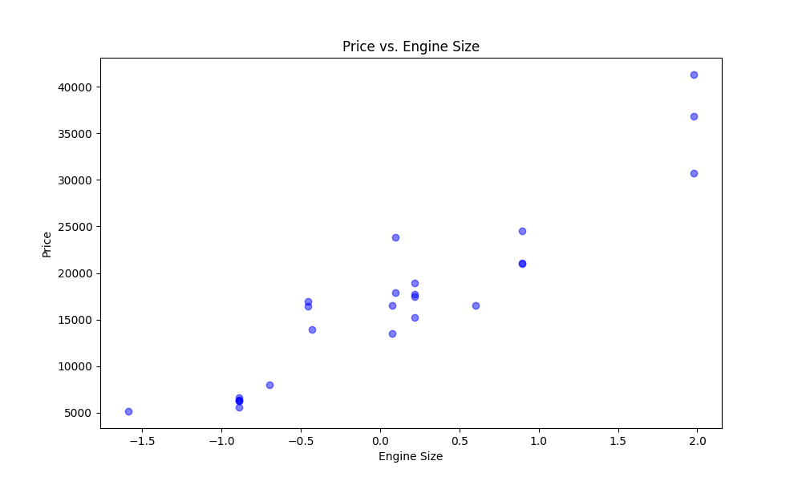
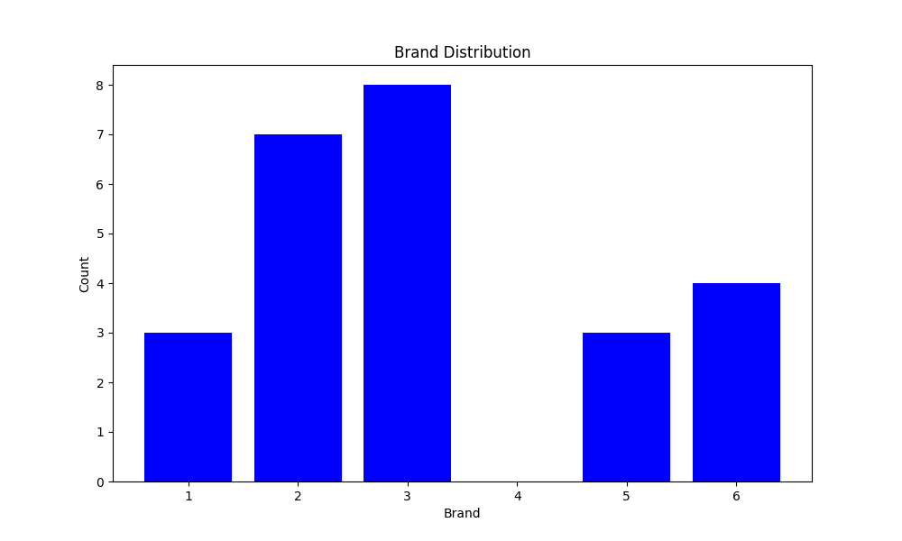
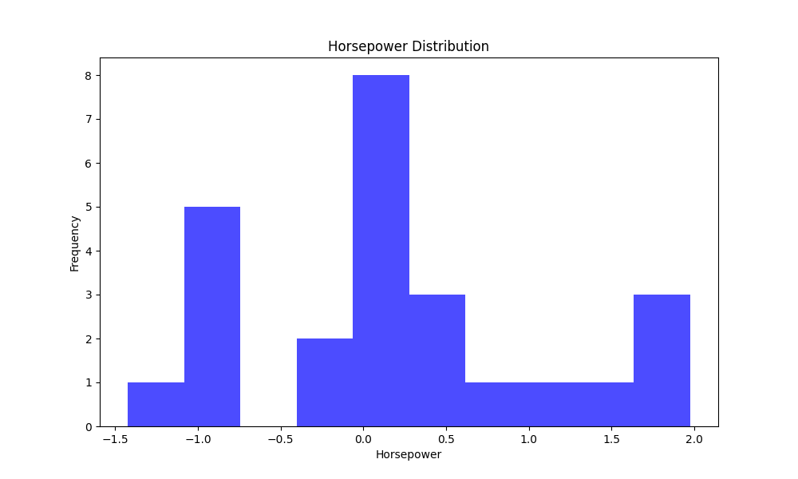

A scatter plot is suitable to show the relationship between two continuous variables, in this case, the price and engine size of cars.
A bar chart is suitable for displaying the distribution of categorical variables, in this case, the distribution of car brands.
A histogram is suitable for visualizing the distribution of a continuous variable, in this case, the distribution of horsepower values.
